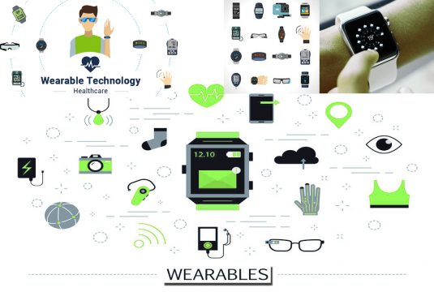

Wearable Technology– The Wearable technology is also known as “wearables”. Wearable Technology as the name applies, is a category of electronic devices that can be worn as accessories “smart watches, health care devices, Bluetooth earphones, etc”, fashion technology, smartwear, tech togs,embedded in clothing, implanted in the user’s body “Example the RFID chip implant, etc”, or even tattooed on the skin. These Wearable devices are hands-free gadgets with practical uses, powered by microcontrollers and microprocessors which enhances the ability to send and receive data through internet, Bluetooth, or Wireless technology, etc.
